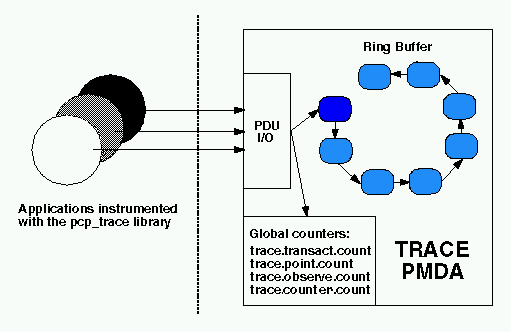
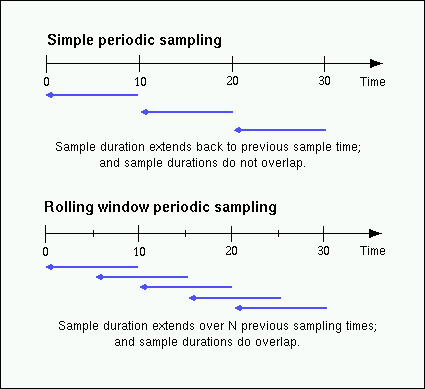
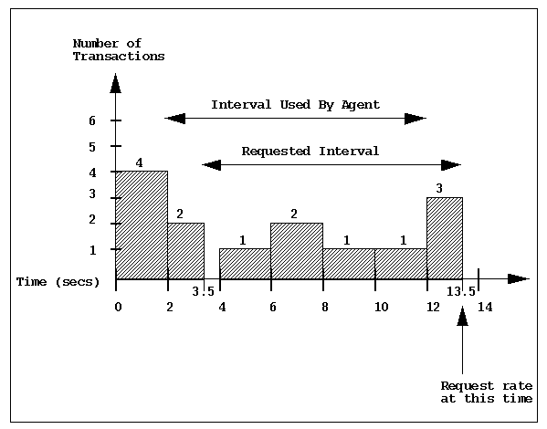
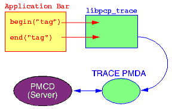

Home · Charts · Time Control
|
|
Home · Charts · Time Control |
pmdatrace pmtrace pminfo |
This chapter of the Performance Co-Pilot tutorial discusses application instrumentation using the trace PMDA (Performance Metrics Domain Agent). The trace agent has similar aims to the Memory Mapped Values (MMV) agent, in that both interfaces for application instrumentation. The main differences are:
For an explanation of Performance Co-Pilot terms and acronyms, consult the PCP glossary.
This document provides an introduction to the design of the trace agent, in an effort to explain how to configure the agent optimally for a particular problem domain. This will be most useful as a supplement to the functional coverage which the manual pages provide to both the agent and the library interfaces.
Details of the use of the trace agent, and the associated library (libpcp_trace) for instrumenting applications, are also discussed.
# . /etc/pcp.conf # cd $PCP_PMDAS_DIR/trace # ./InstallExport a value, from the shell using: $ pmtrace -v 100 "database-users" $ pminfo -f trace |
The diagram below describes the general state maintained within the trace agent. Applications which are linked with the libpcp_trace library make calls through the trace Applications Programmer Interface (API), resulting in inter-process communication of trace data between the application and the trace agent. This data consists of an identification tag, and the performance data associated with that particular tag. The trace agent aggregates the incoming information and periodically updates the exported summary information to describe activity in the recent past.
As each PDU (Protocol Data Unit) is received, its data is stored in the current working buffer, and at the same time the global counter associated with the particular tag contained within the PDU is incremented. The working buffer contains all performance data which has arrived since the previous time interval elapsed, and is discussed in greater detail in the Rolling Window Sampling Technique section below.

The trace agent employs a rolling window periodic sampling technique. The recency of the data exported by the agent is determined by its arrival time at the agent in conjunction with the length of the sampling period being maintained by the trace agent. Through the use of rolling window sampling, the trace agent is able to present a more accurate representation of the available trace data at any given time.
The metrics affected by the agents rolling window sampling technique are:
The remaining metrics are either global counters, control metrics, or the last seen observation/counter value. All metrics exported by the trace agent are explained in detail in the API section below.
This technique uses a single historical buffer to store the history of events which have occurred over the sampling interval. As events occur they are recorded in the working buffer. At the end of each sampling interval the working buffer (which at that time holds the historical data for the sampling interval just finished) is copied into the historical buffer, and the working buffer is cleared (ready to hold new events from the sampling interval now starting).
In contrast to simple periodic sampling with its single historical buffer, the rolling window periodic sampling technique maintains a number of separate buffers. One buffer is marked as the current working buffer, and the remainder of the buffers hold historical data. As each event occurs, the current working buffer is updated to reflect this.
At a specified interval (which is a function of the number of historical buffers maintained) the current working buffer and the accumulated data which it holds is moved into the set of historical buffers, and a new working buffer is used.
The primary advantage of the rolling window approach is that at the point where data is actually exported, the data which is exported has a higher probability of reflecting a more recent sampling period than the data exported using simple periodic sampling.

The data collected over each sample duration and exported using the rolling window technique provides a more up-to-date representation of the activity during the most recently completed sample duration.
The trace agent allows the length of the sample duration to be configured, as well as the number of historical buffers which are to be maintained. The rolling window is implemented in the trace agent as a ring buffer (as shown earlier in the "Trace agent Overview" diagram), such that when the current working buffer is moved into the set of historical buffers, the least recent historical buffer is cleared of data and becomes the new working buffer.
Consider the scenario where one wants to know the rate of transactions over the last 10 seconds. To do this one would set the sampling rate for the trace agent to be 10 seconds and would fetch the metric trace.transact.rate. So if in the last 10 seconds we had 8 transactions take place then we would have a transaction rate of 8/10 or 0.8 transactions per second.
As mentioned above, the trace agent does not actually do this. It instead does its calculations automatically at a subinterval of the sampling interval. Consider the example above with a calculation subinterval of 2 seconds. Please refer to the bar chart below. At time 13.5 secs the user requests the transaction rate and is told it is has a value of 0.7 transactions per second. In actual fact, the transaction rate was 0.8 but the agent has done its calculations on the sampling interval from 2 secs to 12 secs and not from 3.5 secs to 13.5 secs. Every 2 seconds it will do the metrics calculations on the last 10 seconds at that time. It does this for efficiency and so it is not driven each time to do a calculation for a fetch request.

The trace agent is configurable primarily through command line options. The list of command line options presented below is not exhaustive, but covers those options which are particularly relevant to tuning the manner in which performance data is collected.
The libpcp_trace Applications Programmer Interface (API) may be called from C, C++, Fortran, and Java. Each language has access to the complete set of functionality offered by libpcp_trace, although in some cases the calling conventions differ slightly between languages. An overview of each of the different tracing mechanisms offered by the API follows, as well as an explanation of their mappings to the actual performance metrics exported by the trace agent.
Paired calls to the pmtracebegin(3) and pmtraceend(3) API functions will result in transaction data being sent to the agent with a measure of the time interval between the two calls (which is assumed to be the transaction service time). Using the pmtraceabort(3) call causes data for that particular transaction to be discarded. Transaction data is exported through the trace agents trace.transact metrics.
Point tracing allows the application programmer to export metrics related to salient events. The pmtracepoint(3) function is most useful when start and end points are not well defined, eg. when the code branches in such a way that a transaction cannot be clearly identified, or when processing does not follow a transactional model, or the desired instrumentation is akin to event rates rather than event service times. This data is exported through the trace.point metrics.
The pmtraceobs(3) and pmtracecounter(3) functions have similar semantics to pmtracepoint(3), but also allow an arbitrary numeric value to be passed to the trace agent. The most recent value for each tag is then immediately available from the agent. Observation and counter data is exported through the trace.observe and trace.counter metrics, and these differ only in the PMAPI semantics associated with their respective value metrics (the PMAPI semantics for these two metrics is "instantaneous" or "counter" - refer to the PMAPI(3) manual page for details on PMAPI metric semantics).
The trace library is configurable through the use of environment variables, as well as through state flags, which provide diagnostic output and enable or disable the configurable functionality within the library.
The following flags can be used to customize the operation of the libpcp_trace routines. These are registered through the pmtracestate(3) call, and can be set either individually or together.
The libpcp_trace library is designed to encourage application developers (Independent Software Vendors and end-user customers) to embed calls in their code that enable application performance data to be exported. When combined with system-level performance data this allows total performance and resource demands of an application to be correlated with application activity.
Some illustrative application performance metrics might be:
The libpcp_trace library approach offers a number of attractive features:
pmtracebegin("pass 1");
...
pmtraceend("pass 1");
...
pmtraceobs("threads", N);
Once the application performance metrics are exported into the PCP framework, all of the PCP tools may be leveraged to provide performance monitoring and management, including:
The relationship between the application, the libpcp_trace library, the trace agent and the rest of the PCP infrastructure is shown below:

Copyright © 2007-2010 Aconex |